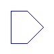
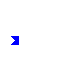
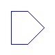
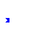


 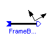
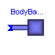
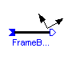
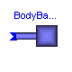


 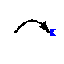
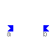
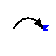
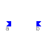


This package contains connectors and partial models for 3D mechanical components.
Release Notes:
Copyright © 2000-2002, DLR.
The Modelica package is free software; it can be redistributed and/or modified under the terms of the Modelica license, see the license conditions and the accompanying disclaimer in the documentation of package Modelica in file "Modelica/package.mo".
ModelicaAdditions.MultiBody.Interfaces.CutJoint

A joint has two mechanical cuts which may move relative to each other. It is a massless element in which no energy is stored. Mathematically, a joint transforms the kinematic properties of frame_a to frame_b and at the same time transforms the force and torque acting on frame_b to frame_a.
A general multibody system with closed kinematic loops is handeled by dividing the joints into two distinct sets: Tree-Joints and Cut-Joints. After removal of all of the Cut-Joints, the resulting system must have a tree-structure. Class CutJoint is used as a superclass for Cut-Joints.
Subclasses of class CutJoint have to provide the (6-f) constraint equations on position level, where f are the number of degrees of freedom of the joint.
partial model CutJoint "Superclass of Cut-Joint classes" extends Interact2; end CutJoint;
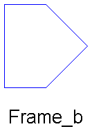
Frame b of a mechanical element.
All mechanical components are always connected together at frames. A frame is a coordinate system in the (mechanical) cut-plane of the connection point. The variables of the cut-plane are defined with respect to the corresponding frame_b and have the following meaning:
Potential variables:
S : Rotation matrix describing frame_b with respect to the inertial
frame, i.e. if ha is vector h resolved in frame_b and h0 is
vector h resolved in the inertial frame, h0 = S*ha.
r0: Vector from the origin of the inertial frame to the origin
of frame_a, resolved in the inertial frame in [m] !!! (note,
that all other vector quantities are resolved in frame_a!!!).
v : Absolute (translational) velocity of frame_a, resolved in a,
in [m/s]: v = transpose(S)*der(r0)
w : Absolute angular velocity of frame_a, resolved in a,
in [rad/s] : w = vec(transpose(S)*der(S)); Note, that
| 0 -w3 w2 |
skew(w) = | w3 0 -w1 | and w=vec(skew(w))
| -w2 w1 0 |
a : Absolute translational acceleration of frame_b - gravity
acceleration, resolved in a, in [m/s^2]:
a = transpose(S)*( der(S*v) - ng*g )
(ng,g are defined in model MultiBody.Parts.InertialSystem).
z : Absolute angular acceleration of frame_a, resolved in a,
in [rad/s^2]: z = transpose(S)*der(S*w)
Flow variables:
f : Resultant cut-force acting at the origin of frame_a,
resolved in a, in [N].
t : Resultant cut-torque with respect to the origin of frame_a,
resolved in a, in [Nm].
connector Frame_b "Frame b of a mechanical element"
output SI.Position r0[3]
"Position vector from inertial system to frame origin, resolved in inertial system"
;
Real S[3, 3] "Transformation matrix from frame_a to inertial system";
SI.Velocity v[3] "Absolute velocity of frame origin, resolved in frame_a";
SI.AngularVelocity w[3]
"Absolute angular velocity of frame_a, resolved in frame_a";
SI.Acceleration a[3]
"Absolute acceleration of frame origin, resolved in frame_a";
SI.AngularAcceleration z[3]
"Absolute angular acceleration of frame_a, resolved in frame_a";
flow SI.Force f[3];
flow SI.Torque t[3];
end Frame_b;
ModelicaAdditions.MultiBody.Interfaces.ExtForceBase

An external force element exerts a force on frame_b, resolved in frame_b. Force fb (=-frame_b.f) must be assigned a value.
partial model ExtForceBase "Superclass of external forces" Frame_a frame_b; equation frame_b.t = zeros(3); end ExtForceBase;

An external torque element exerts a torque on frame_b, resolved in frame_b. Torque tb (=-frame_b.t) must be assigned a value.
partial model ExtTorqueBase "Superclass of external torques" Frame_a frame_b; equation frame_b.f = zeros(3); end ExtTorqueBase;
ModelicaAdditions.MultiBody.Interfaces.LineForce

Superclass of line force elements.
A line force element exerts a force between the origin of frame_a and the origin of frame_b. In subclasses of this class the line force f is given as function of the relative distance s between the origins of the two cut-frames and its first derivative sd. The following parameters are defined:
sEps: When sd , sdd , fa , fb are calculated, a division by
zero takes place, if the distance becomes zero. Therefore, for
this calculation the modified distance smod = max(s, sEps)
is used.
Terminal variables:
f : The scalar value of the line force in [N].
pulling force: f > 0
pressure force: f < 0
s : Distance in [m] (s >= 0).
sd : First derivative of s in [m/s].
sdd : Second derivative of s in [m/s^2].
na(3): Unit vector on the line from the origin of frame_a to
the origin of frame_b, resolved in frame_a.
Note:
Both frames of a force element have always to be connected at
frame_a of a joint, of a body or of the inertial system. It is not possible
to e.g. connect two force elements in series.
| Name | Default | Description |
|---|---|---|
| sEps | 1.E-6 | prevent zero-division if rel. distance s=0 [m] |
model LineForce "Superclass of line force elements" extends Interact2; parameter Real sEps=1.E-6 "prevent zero-division if rel. distance s=0 [m]"; SI.Force f; SI.Position s; SI.Velocity sd; SI.Acceleration sdd; Real na[3]; SI.Position smod; equation s = sqrt(r_rela*r_rela); /*Determine velocity and acceleration, guard against zero distance*/ smod = max([s, sEps]); na = r_rela/smod; sd = na*v_rela; sdd = na*a_rela + (v_rela*v_rela - sd*sd)/smod; /*Determine forces/torques at frame_a and B*/ ta = zeros(3); tb = zeros(3); fa = -na*f; fb = S_rel*fa; end LineForce;
ModelicaAdditions.MultiBody.Interfaces.Frame
Frame of a mechanical element.
All mechanical components are always connected together at frames. A frame is a coordinate system in the (mechanical) cut-plane of the connection point. The variables of the cut-plane are defined with respect to the corresponding frame and have the following meaning:
Potential variables:
S : Rotation matrix describing frame with respect to the inertial
frame, i.e. if ha is vector h resolved in the frame_and h0 is
vector h resolved in the inertial frame, h0 = S*ha.
r0: Vector from the origin of the inertial frame to the origin
of frame_a, resolved in the inertial frame in [m] !!! (note,
that all other vector quantities are resolved in frame_a!!!).
v : Absolute (translational) velocity of frame_a, resolved in a,
in [m/s]: v = transpose(S)*der(r0)
w : Absolute angular velocity of frame_a, resolved in a,
in [rad/s] : w = vec(transpose(S)*der(S)); Note, that
| 0 -w3 w2 |
skew(w) = | w3 0 -w1 | and w=vec(skew(w))
| -w2 w1 0 |
a : Absolute translational acceleration of frame - gravity
acceleration, resolved in a, in [m/s^2]:
a = transpose(S)*( der(S*v) - ng*g )
(ng,g are defined in model MultiBody.Parts.InertialSystem).
z : Absolute angular acceleration of frame_a, resolved in a,
in [rad/s^2]: z = transpose(S)*der(S*w)
Flow variables:
f : Resultant cut-force acting at the origin of frame_a,
resolved in a, in [N].
t : Resultant cut-torque with respect to the origin of frame_a,
resolved in a, in [Nm].
record Frame "Frame record of a mechanical element"
SI.Position r0[3]
"Position vector from inertial system to frame origin, resolved in inertial system"
;
Real S[3, 3] "Transformation matrix from frame_a to inertial system";
SI.Velocity v[3] "Absolute velocity of frame origin, resolved in frame_a";
SI.AngularVelocity w[3]
"Absolute angular velocity of frame_a, resolved in frame_a";
SI.Acceleration a[3]
"Absolute acceleration of frame origin, resolved in frame_a";
SI.AngularAcceleration z[3]
"Absolute angular acceleration of frame_a, resolved in frame_a";
flow SI.Force f[3];
flow SI.Torque t[3];
end Frame;
ModelicaAdditions.MultiBody.Interfaces.Frame_a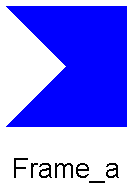
Frame a of a mechanical element.
All mechanical components are always connected together at frames. A frame is a coordinate system in the (mechanical) cut-plane of the connection point. The variables of the cut-plane are defined with respect to the corresponding frame_a and have the following meaning:
Potential variables:
S : Rotation matrix describing frame_a with respect to the inertial
frame, i.e. if ha is vector h resolved in frame_a and h0 is
vector h resolved in the inertial frame, h0 = S*ha.
r0: Vector from the origin of the inertial frame to the origin
of frame_a, resolved in the inertial frame in [m] !!! (note,
that all other vector quantities are resolved in frame_a!!!).
v : Absolute (translational) velocity of frame_a, resolved in a,
in [m/s]: v = transpose(S)*der(r0)
w : Absolute angular velocity of frame_a, resolved in a,
in [rad/s] : w = vec(transpose(S)*der(S)); Note, that
| 0 -w3 w2 |
skew(w) = | w3 0 -w1 | and w=vec(skew(w))
| -w2 w1 0 |
a : Absolute translational acceleration of frame_a - gravity
acceleration, resolved in a, in [m/s^2]:
a = transpose(S)*( der(S*v) - ng*g )
(ng,g are defined in model MultiBody.Parts.InertialSystem).
z : Absolute angular acceleration of frame_a, resolved in a,
in [rad/s^2]: z = transpose(S)*der(S*w)
Flow variables:
f : Resultant cut-force acting at the origin of frame_a,
resolved in a, in [N].
t : Resultant cut-torque with respect to the origin of frame_a,
resolved in a, in [Nm].
connector Frame_a "Frame a of a mechanical element"
input SI.Position r0[3]
"Position vector from inertial system to frame origin, resolved in inertial system"
;
Real S[3, 3] "Transformation matrix from frame_a to inertial system";
SI.Velocity v[3] "Absolute velocity of frame origin, resolved in frame_a";
SI.AngularVelocity w[3]
"Absolute angular velocity of frame_a, resolved in frame_a";
SI.Acceleration a[3]
"Absolute acceleration of frame origin, resolved in frame_a";
SI.AngularAcceleration z[3]
"Absolute angular acceleration of frame_a, resolved in frame_a";
flow SI.Force f[3];
flow SI.Torque t[3];
end Frame_a;
Superclass of elements which have one mechanical frame, which is called frame_a.
partial model OneFrame_a
"Superclass of elements with ONE mechanical frame_a"
protected
Real Sa[3, 3](start=identity(3));
SI.Position r0a[3];
SI.Velocity va[3];
SI.AngularVelocity wa[3];
SI.Acceleration aa[3];
SI.AngularAcceleration za[3];
SI.Force fa[3];
SI.Torque ta[3];
public
Frame_a frame_a(
S=Sa,
r0=r0a,
v=va,
w=wa,
a=aa,
z=za,
f=fa,
t=ta);
end OneFrame_a;
ModelicaAdditions.MultiBody.Interfaces.OneFrame_b
Superclass of elements which have ONE mechanical frame, which is called frame_b .
partial model OneFrame_b
"Superclass of elements with ONE mechanical frame_b"
protected
Real Sb[3, 3](start=identity(3));
SI.Position r0b[3];
SI.Velocity vb[3];
SI.AngularVelocity wb[3];
SI.Acceleration ab[3];
SI.AngularAcceleration zb[3];
SI.Force fb[3];
SI.Torque tb[3];
public
Frame_b frame_b(
S=Sb,
r0=r0b,
v=vb,
w=wb,
a=ab,
z=zb,
f=-fb,
t=-tb);
end OneFrame_b;
ModelicaAdditions.MultiBody.Interfaces.TwoTreeFrames

Superclass of elements which have two mechanical frames in the spanning tree, which are called frame_a and frame_b, respectively.
Important
frame_a of an element should always be connected to a frame_b.
frame_b of an element should always be connected to a frame_a.
partial model TwoTreeFrames
"Superclass of elements of the spanning tree with TWO frames"
public
constant Real pi=Modelica.Constants.pi;
constant Real PI=Modelica.Constants.pi;
// Only for compatibility reasons
protected
Real Sa[3, 3](start=identity(3));
SI.Position r0a[3];
SI.Velocity va[3];
SI.AngularVelocity wa[3];
SI.Acceleration aa[3];
SI.AngularAcceleration za[3];
SI.Force fa[3];
SI.Torque ta[3];
Real Sb[3, 3](start=identity(3));
SI.Position r0b[3];
SI.Velocity vb[3];
SI.AngularVelocity wb[3];
SI.Acceleration ab[3];
SI.AngularAcceleration zb[3];
SI.Force fb[3];
SI.Torque tb[3];
public
Frame_a frame_a(
S=Sa,
r0=r0a,
v=va,
w=wa,
a=aa,
z=za,
f=fa,
t=ta);
Frame_b frame_b(
S=Sb,
r0=r0b,
v=vb,
w=wb,
a=ab,
z=zb,
f=-fb,
t=-tb);
end TwoTreeFrames;
ModelicaAdditions.MultiBody.Interfaces.TwoNoTreeFrames

Superclass of elements which have two mechanical frames, which are called frame_a and frame_b, respectively. Submodels of the class are not allowed to be part of the spanning tree.
partial model TwoNoTreeFrames
"Superclass of elements not part of the spanning tree (two frames)"
public
constant Real pi=Modelica.Constants.pi;
constant Real PI=Modelica.Constants.pi;
// Only for compatibility reasons
protected
Real Sa[3, 3](start=identity(3));
SI.Position r0a[3];
SI.Velocity va[3];
SI.AngularVelocity wa[3];
SI.Acceleration aa[3];
SI.AngularAcceleration za[3];
SI.Force fa[3];
SI.Torque ta[3];
Real Sb[3, 3](start=identity(3));
SI.Position r0b[3];
SI.Velocity vb[3];
SI.AngularVelocity wb[3];
SI.Acceleration ab[3];
SI.AngularAcceleration zb[3];
SI.Force fb[3];
SI.Torque tb[3];
public
Frame_a frame_a(
S=Sa,
r0=r0a,
v=va,
w=wa,
a=aa,
z=za,
f=fa,
t=ta);
Frame_a frame_b(
S=Sb,
r0=r0b,
v=vb,
w=wb,
a=ab,
z=zb,
f=-fb,
t=-tb);
end TwoNoTreeFrames;

Fixed translation of frame_b with respect to frame_a, i.e., the frames of connectors frame_a and frame_b are parallel to each other. The following parameters are defined:
r: Position vector from the origin of (connector) frame_a to the origin of
(connector) frame_b, resolved in frame_a in [m].
| Name | Default | Description |
|---|---|---|
| r[3] | {0,0,0} | Vector from frame_a to frame_b resolved in frame_a [m] |
partial model FrameBase
"Base class of models with a fixed translation and orientation between frame_a and frame_b"
extends TwoTreeFrames;
parameter SI.Position r[3]={0,0,0}
"Vector from frame_a to frame_b resolved in frame_a";
protected
SI.Velocity vaux[3];
Real S_rel[3, 3]
"relative transformation matrix from frame_a to frame_b (defined in subclasses)"
;
equation
/*general equations of a "TreeJoint" specialized to this class*/
Sb = Sa*transpose(S_rel);
r0b = r0a + Sa*r;
vaux = cross(wa, r);
vb = S_rel*(va + vaux);
ab = S_rel*(aa + cross(za, r) + cross(wa, vaux));
wb = S_rel*wa;
zb = S_rel*za;
/* Transform the force and torque acting at frame_b to frame_a */
fa = transpose(S_rel)*fb;
ta = transpose(S_rel)*tb + cross(r, fa);
end FrameBase;
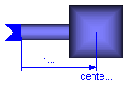
This model should usually not be used directly, because the mass properties have to be given as terminal variables and not as parameters. This allows the computation of the mass properties from other data, as well as the modification of the mass properties at event points. The following variables have to be computed in subclasses:
m : Mass of body in [kg].
rCM(3): Position vector from the origin of frame_a to the center
of mass, resolved in frame_a in [m].
I(3,3): Inertia tensor of the body with respect to the center of mass,
resolved in frame_a in [kgm^2]. The matrix must be
symmetric and positiv semi-definit.
model BodyBase "Inertia and mass properties of a rigid body" extends OneFrame_a; SI.Mass m; SI.Position rCM[3]; SI.Inertia I[3, 3]; equation fa = m*(aa + cross(za, rCM) + cross(wa, cross(wa, rCM))); ta = I*za + cross(wa, I*wa) + cross(rCM, fa); end BodyBase;
ModelicaAdditions.MultiBody.Interfaces.Interact
All relative kinematic quantities between frame_a and frame_b are defined, i.e., relative position, relative velocity and relative acceleration (resolved in frame_a).
For efficiency reasons, these calculations are performed in subclasses (= the same equations are just solved for different variables according to the usually needed causality). The relative quantities, which are defined in this model, have the following meaning:
S_rel : Rotation matrix relating frame_a and frame_b, i.e. if
hb is vector h resoved in frame_b and ha is vector h resolved
in frame_a, hb = S_rel*ha.
r_rela: Vector from the origin of frame_a to the origin of frame_b,
resolved in frame_a.
v_rela: (Translational) velocity of frame_b with respect to frame_a,
resolved in frame_a: v_rela = der(r_rela)
w_rela: Angular velocity of frame_b with respect to frame_a,
resolved in frame_a: w_rela = vec( der(S_rel)'*S_rel )
a_rela: (Translational) acceleration of frame_b with respect to
frame_a, resolved in frame_a: a_rela = der( v_rela )
z_rela: Angular acceleration of frame_b with respect to frame_a,
resolved in frame_a: z_rela = der( w_rela )
If needed, all of the above quantities can also easily be resolved in frame_b, according to Xrelb = S_rel*Xrela . However note, that v_relb is not der(r_relb) (v_relb=S_rel*v_rela; r_relb=S_rel*r_rela).
partial model Interact "Superclass of joint, force and sensor elements" Real S_rel[3, 3]; SI.Position r_rela[3]; SI.Velocity v_rela[3]; SI.AngularVelocity w_rela[3]; SI.Acceleration a_rela[3]; SI.AngularAcceleration z_rela[3]; end Interact;
ModelicaAdditions.MultiBody.Interfaces.Interact2
partial model Interact2
"Superclass of CutJoint, Force and Sensor classes"
extends TwoNoTreeFrames;
extends Interact;
SI.Velocity vaux[3];
equation
S_rel = transpose(Sb)*Sa;
/*relative position vectors*/
r_rela = transpose(Sa)*(r0b - r0a);
/*relative velocities*/
vaux = cross(wa, r_rela);
v_rela = transpose(S_rel)*vb - va - vaux;
w_rela = transpose(S_rel)*wb - wa;
/*relative accelerations*/
a_rela = transpose(S_rel)*ab - aa - cross(za, r_rela) - cross(wa, vaux + 2*
v_rela);
z_rela = transpose(S_rel)*zb - za - cross(wa, w_rela);
end Interact2;

A force element exerts a force and torque on frame_a and with opposite direction on frame_b. In subclasses of this class the cut-forces/torques at frame_a, have to be given as function of the relative quantities computed in class Interact2 (S_rel, r_rela, v_rela, w_rela).
In class Force, the cut-forces/torques at frame_b are computed from the cut-forces/torques at frame_a.
Note:
Both frames of a force element have always to be connected
at frame_a of a joint, of a body or of the inertial system.
It is not possible to, e.g., connect two force elements in series.
model Force "Superclass of (general) force elements" extends Interact2; equation fb = S_rel*fa; tb = S_rel*ta - S_rel*cross(r_rela, fa); end Force;
ModelicaAdditions.MultiBody.Interfaces.TreeJoint

A joint has two mechanical cuts which may move relative to each other. In every cut a coordinate system is rigidly attached, called frame_a and frame_b, correspondingly. It is a massless element in which no energy is stored. Mathematically, a joint transforms the kinematic properties of frame_a to frame_b and at the same time transforms the force and torque acting on frame_b to frame_a.
A general multibody system with closed kinematic loops is handeled by dividing the joints into two distinct sets: Tree-Joints and Cut-Joints. After removal of all of the Cut-Joints, the resulting system must have a tree-structure. Class TreeJoint is used as a superclass for Tree-Joints.
The relative motion between the two cut-frames of a Tree-Joint is described by f (0 <= f <= 6) generalized minimal-coordinates q and their first and second derivatives qd, qdd. In subclasses of class TreeJoint the relative kinematic quantities are given as functions of q, qd, qdd, according to the specific joint type. In class TreeJoint the relationships are provided between the kinematic and dynamic quantities of frame_a and frame_b and of the relative quantities.
In order to speedup the generation of the equations, the common equations of TreeJoint classes are not stored in model TreeJoint, but in the specific submodel. This has the advantage that special joint properties (like S_rel=identity(3), i.e., the relative transformation matrix is a unit matrix) are already utilized and the Modelica translator does not have to waste time and space to find this out by symbolic formula transformation. The common equations which could be stored in the TreeJoint model are given as a comment below.
partial model TreeJoint
"Superclass of joints used in the spanning tree"
extends TwoTreeFrames;
extends Interact;
equation
/* Equations to relate quantities of frame_a and frame_b.
These equations are defined in the submodels and are
adapted to the particular joint.
Sb = Sa*transpose(S_rel);
r0b = r0a + Sa*r_rela;
vaux = cross(wa,r_rela)
vb = S_rel*(va + v_rela + vaux)
wb = S_rel*(wa + w_rela)
ab = S_rel*( aa + a_rela + cross(za,r_rela) + cross(wa,vaux+2*v_rela) )
zb = S_rel*( za + z_rela + cross(wa,w_rela) )
ab = S_rel*aa;
zb = S_rel*(za + z_rela + cross(wa, w_rela));
fa = transpose(S_rel)*fb;
ta = transpose(S_rel)*tb + cross(r_rela,fa);
*/
end TreeJoint;
ModelicaAdditions.MultiBody.Interfaces.planarRotation
function planarRotation
"Determine transformation matrix for planar rotation"
input Real n[3] "normalized axis of rotation";
input SI.Angle angle "rotation angle";
output Real S[3, 3]
"transformation matrix to rotate a frame_along axis n around angle";
algorithm
S := [n]*transpose([n]) + (identity(3) - [n]*transpose([n]))*cos(angle) -
skew(n)*sin(angle);
end planarRotation;
ModelicaAdditions.MultiBody.Interfaces.axisRotation
function axisRotation
"Determine transformation matrix for rotation around one axis"
import Modelica.Math.*;
input Integer i(min=1, max=3) "rotate around axis i";
input SI.Angle angle "rotation angle";
output Real S[3, 3]
"transformation matrix to rotate a frame along axis i around angle";
algorithm
S := if i == 1 then [1, 0, 0; 0, cos(angle), sin(angle); 0, -sin(angle), cos(
angle)] else if i == 2 then [cos(angle), 0, -sin(angle); 0, 1, 0; sin(angle
), 0, cos(angle)] else [cos(angle), sin(angle), 0; -sin(angle), cos(angle)
, 0; 0, 0, 1];
end axisRotation;